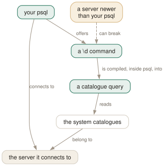

Day 17
Sharp edges
Watching psql work, version skew, restricted dumps — and what to read next.
By the end of today you can
- read the catalogue query behind any \d command, and steal it
- say which direction psql/server version skew breaks in, and why
- find the answer to a psql question in under a minute without leaving the terminal
Watching psql work
Every \d command is a query. Not a protocol feature, not a server command — a SELECT against the system catalogues, written into psql's source. -E shows it to you, and it is the single best-value flag in the program.
$ psql -E
testdb=# \dn
/******** QUERY *********/
SELECT n.nspname AS "Name",
pg_catalog.pg_get_userbyid(n.nspowner) AS "Owner"
FROM pg_catalog.pg_namespace n
WHERE n.nspname !~ '^pg_' AND n.nspname <> 'information_schema'
ORDER BY 1;
/************************/
List of schemas
Name | Owner
--------+-------------------
app | postgres
public | pg_database_owner
That is where the monitoring queries in everybody's snippets file came from. You want “tables over a gigabyte, with index sizes”: run \dt+ under -E, take the query, add a WHERE. You have never had to learn that pg_class.relkind is 'r' for a table, because psql knew.
ECHO_HIDDEN is the variable behind the flag, and it has a third setting worth knowing: noexec prints the queries and does not run them. That is the reading mode — you get the SQL without waiting for a \dt+ to size forty thousand relations.
There is a second view of the same thing, from the other end. If you took Day 2's container, its first terminal is already running with log_statement=all and log_duration=on, so the server is telling you what it received — and that is not merely a duplicate of -E, because it settles two questions the client cannot:
-- psql -c 'CREATE TABLE m1(i int); CREATE TABLE m2(i int)'
LOG: statement: CREATE TABLE m1(i int); CREATE TABLE m2(i int)
LOG: duration: 1.153 ms
-- SELECT $1::int + 1 \bind 41 \g
LOG: execute <unnamed>: SELECT $1::int + 1
LOG: duration: 0.014 ms
The first is Day 11's claim made visible: two statements in one -c arrive as one logged statement, which is why they share a transaction. The second is Day 16's: \bind is logged as execute rather than statement:, because the server is being driven over the extended protocol. Neither is something you can see from the client side at all.

\d command is a catalogue query compiled into psql, not a request the server understands, so psql has to know the catalogues it is asking about. It can carry branches for catalogues older than itself; it cannot know about ones invented afterwards. Hence the amber aspect, and hence the one rule: use the newest psql you have, whatever server you are pointing it at.Version skew runs one way
Because the \d family lives in psql rather than the server, compatibility is asymmetric. psql can contain branches for catalogues older than itself; it cannot anticipate catalogues newer than itself. So:
- psql newer than the server
- fine. The manual page promises the
\dfamily works against servers back to 9.2. - psql older than the server
- the configuration that breaks. Backslash commands are “particularly likely to fail”, in the manual page's words.
- running SQL either way
- generally works, “but this cannot be guaranteed in all cases”.
Hence the rule: use the newest psql you have, whichever server you are pointing it at. The manual page recommends exactly that in preference to keeping one client per server version, and the reason people do not is that distributions install the client that matches their own server package. If you talk to several major versions, install the newest client deliberately.
Restricted mode, and why a dump has it
New enough to be unfamiliar, and you will meet it in a pg_dump file before you meet it anywhere else. \restrict takes an alphanumeric key and blocks every meta-command except an \unrestrict with the same key:
testdb=# \restrict aB3xY
testdb=# \dt
backslash commands are restricted; only \unrestrict is allowed
testdb=# SELECT 1;
?column?
----------
1
(1 row)
testdb=# \unrestrict wrongkey
\unrestrict: wrong key
testdb=# \unrestrict aB3xY
Note that SQL keeps working — this is not a lock, it is a shield for one specific threat. A plain-text dump contains data, and data can contain text that looks like a meta-command. Restoring such a dump by feeding it to psql would otherwise let a value in somebody's text column become a \!. Wrapping the region in \restrict with a key the dump chose at random makes that impossible, because the attacker would have to guess the key.
The practical consequence: do not strip the pair out of a dump to make it tidier, and do not be alarmed when grep finds it. If you use it yourself — around an \i of a file you do not fully trust — remember that \unrestrict's argument is not interpolated, like \copy's and \!'s.
Two more edges
Enormous result sets. psql collects a whole result before displaying it, so nine million rows is an out-of-memory error rather than a slow print. FETCH_COUNT changes that: set it to something between 100 and 1000 and psql fetches and displays in groups. Two costs, and both are worth knowing before you set it in psqlrc:
- A query can now fail after you have seen some rows, because the failure happens partway through fetching.
- In
alignedformat the column widths are computed from the first group only, so later wider values overflow the border instead of widening it. The manual page recommends another format, and it is right — with--csvor-Athere is no width to get wrong.
Encodings. When both standard input and standard output are a terminal, psql sets the client encoding to auto and derives it from your locale — LC_CTYPE on Unix. When they are not a terminal, it does not, which is why a script can mangle characters that were fine interactively. PGCLIENTENCODING overrides it, and \encoding shows or changes it mid-session (and updates ENCODING).
Two smaller ones to file away. PG_COLOR (always/auto/never) controls colour in psql's own diagnostics, which is worth never in a log-scraping context. And TMPDIR is where \e writes its scratch file, which matters if /tmp is small, noexec, or shared.
Finding the answer in under a minute
You will not remember all of this, and you do not need to. psql carries three reference manuals of its own, and none of them is the man page:
\?or\? commands- every meta-command, in the twelve groups from Day 1. This is the one you will use.
\? options- the command-line options.
\? variables- the thirty-odd special variables, with their allowed values in brackets.
\h NAME- SQL syntax for one command.
\halone lists what it knows;\h *prints all of it.
All three \? topics are available before you connect, as --help=commands, --help=options and --help=variables. And \? variables is worth one deliberate read now: after sixteen days you will recognise most of the list, and the handful you do not are a fair map of what this course left out.
When the answer is not in psql, it is in the PostgreSQL manual, and the psql page points at the sections by number rather than by name. The ones it refers to most, so you can find them:
- §32.1.1–32.1.2
- connection strings and every libpq parameter — the full vocabulary for Day 2's conninfo
- §32.15, §32.16
- the environment variables and the password file
- §32.5
- pipelining, from the library's side rather than psql's — Day 16's other half
- §54.1.2, §54.2.2.1
- the extended query protocol, and how the server treats a multi-statement request
- §5.8
- how to read a privilege display — Day 4's letters, defined
- §9.7.3
- regular expressions, which is what Day 3's patterns are underneath
What you have, and what is next
The file in your home directory is the artefact. Read it top to bottom once, and delete anything you cannot defend — including anything this course suggested. A psqlrc you inherited from a stranger is exactly the thing this was meant to replace.
Three directions from here, none of them psql. pg_dump and pg_restore share psql's connection options and conventions, so Day 2 transfers to them wholesale. pspg is the pager that understands psql's output, and the reason PSQL_WATCH_PAGER exists. And the catalogue queries you started stealing on this page are the beginning of your own monitoring — the pg_stat_ views are the other half, and -E taught you how to read them.
The thing worth keeping from seventeen days is smaller than the syllabus: psql is a buffer, a set of variables, and a printing engine, and every command is described in terms of one of the three. When you meet something new in the manual page, work out which of the three it acts on. That is the whole trick.
New vocabulary
Commands
| Command | Does |
|---|---|
\? [topic] | commands (default), options or variables. Three manuals, none of them the man page. |
\encoding [name] | Show or set the client encoding. Sets ENCODING too. |
\restrict key \unrestrict key | Block every meta-command but the matching \unrestrict. Used by pg_dump. |
Options
| Option | Does |
|---|---|
-E ECHO_HIDDEN | Print the catalogue query behind each \d. noexec prints without running. |
--help=topic | The three \? topics, from the shell, before you have connected. |
FETCH_COUNT | Display SELECT results in groups of N rows. 0 (the default) means all at once. |
PGCLIENTENCODING | Override the client encoding psql would otherwise detect from your locale. |
PG_COLOR | always / auto / never — colour in psql's own diagnostics. |
TMPDIR | Where \e writes its scratch file. Default /tmp. |
Today's configappend to ~/.psqlrc
The last two lines of the file, and they must be last. \unset QUIET turns reporting back on, so that everything you type from now on confirms itself; and one line of your own beats the four psql would have printed. Seeing the database and the host before your first statement has stopped more accidents than any other line here.
\unset QUIET
\echo Connected to :DBNAME as :USER on :HOST port :PORT
psql reads this once at start-up, after connecting. Re-read it in place with \i ~/.psqlrc.
Drillsdo these in a real terminal, today
Self-check
Answer out loud first, then unfold.
You need to list every table over a gigabyte, with its index sizes. Where does the query come from?
From psql, with -E. Run \dt+ with ECHO_HIDDEN on and psql prints the catalogue query it is about to issue, between /******** QUERY *********/ banners. Copy it, add your own WHERE and ORDER BY, and you have a correct query against pg_class and pg_namespace without having learned their column names.
This is the single best-value flag in psql and it is documented as being for studying “psql's internal operations”, which undersells it considerably. ECHO_HIDDEN=noexec prints the queries without running them, which is the right setting when you are reading rather than debugging.
A colleague running psql 13 against your PostgreSQL 18 server gets errors from \d. You run psql 18 against a PostgreSQL 12 server and everything works. Why is it asymmetric?
Because the \d family is not a server feature. Each command is a catalogue query compiled into psql, so psql needs to know the shape of the catalogues it is querying. It can contain compatibility branches for catalogues that existed when it was built — the manual page promises the \d family back to server 9.2 — but it cannot know about catalogue changes made after it was written.
So the rule is one-directional and easy to remember: use the newest psql you have. The manual page says the same — “if you want to use psql to connect to several servers of different major versions, it is recommended that you use the newest version of psql”. Running SQL and displaying results is generally fine in both directions; it is the backslash commands that break.
You open a pg_dump plain-text file, and partway through there is \restrict aB3xY. What is it for, and what happens if you paste the file into a session without it?
It puts psql into restricted mode, where the only meta-command accepted is a \unrestrict with the matching key. Ordinary SQL still runs; every backslash command answers “backslash commands are restricted; only \unrestrict is allowed”.
The point is that a dump contains data, and data can contain text that looks like a meta-command. Wrapping the risky region in \restrict with an unguessable key means a value in somebody's text column cannot turn into a \! when the dump is restored. If you strip the pair out you lose that protection — which matters exactly when you are restoring a dump you did not produce.
A query returns nine million rows and psql runs out of memory before printing anything. What do you set, and what does it do to the output?
FETCH_COUNT, to something between 100 and 1000. Instead of collecting the whole result set before displaying it, psql fetches and prints in groups of that many rows, so memory use stops depending on the result size. The cost is that a query can now fail after you have already seen some rows.
And it disturbs the aligned format, because column widths are computed from the first group only — later, wider values overflow the border rather than widening it. The manual page's advice is to use another format, and it is right: with --csv or -A there is no width to get wrong.
Cheat sheet
Three manuals inside psql, and none of them is the man page.
\? -- every meta-command, in 12 groups --help=commands from the shell
\? options -- the command line --help=options
\? variables -- the ~30 special variables --help=variables
\h NAME -- SQL syntax for one command \h lists them, \h * prints all
psql -E -- print the catalogue query behind every \d. STEAL THESE.
\set ECHO_HIDDEN noexec -- show the queries WITHOUT running them
-- version skew runs one way: use the NEWEST psql you have
psql newer than server: fine, \d works back to server 9.2
psql older than server: backslash commands break
\restrict KEY / \unrestrict KEY -- pg_dump's shield: SQL still runs, \commands do not
\set FETCH_COUNT 1000 -- stream huge results; aligned widths come from the FIRST group
\encoding | PGCLIENTENCODING | PG_COLOR=never | TMPDIR (where \e writes)
Everything through Day 17
Keys
| Key | Does |
|---|---|
| C-c | Abandon the line you are typing and empty the query buffer. |
| C-d | End the session — but only when the buffer is empty. |
| Tab | Complete a keyword or an object name. Twice for a menu, depending on the library. |
| UpC-p | The previous line from the history. |
| C-r | Reverse incremental search through the history. The one worth learning today. |
Commands
| Command | Does |
|---|---|
psql | Connect with the defaults and start an interactive session. |
; | Dispatch the buffer. Not a meta-command — SQL's own statement terminator. |
\g | Dispatch the buffer, exactly as a semicolon does. |
\p | Print the buffer without sending it. \print in full. |
\r | Reset: throw the buffer away. \reset in full. |
\e | Edit the buffer in $EDITOR; on exit it is re-parsed and run. |
\w file | Write the buffer to a file instead of sending it. |
\; | Append a semicolon to the buffer without dispatching it. |
\? | Every meta-command, in twelve groups. 121 of them in 18.6. |
\h SELECT | Syntax for one SQL command. \h alone lists what it knows. |
\q | Quit. |
\c dbname | Reconnect to another database, reusing host, port and user. |
\c - user | Reconnect as another user. A dash means “leave that one as it is”. |
\c -reuse-previous=on ... | Merge a conninfo string onto the current parameters. |
\conninfo | A twelve-row table describing the live connection. |
\password | Change a password without it reaching your history or the server log. |
\encoding | Show the client encoding, or set it. |
\d | Bare: tables, views, materialized views, sequences and foreign tables. |
\d my_table | Describe one relation: columns, types, nullability, defaults, indexes, constraints. |
\d+ my_table | Adds storage, compression, stats target and per-column comments. |
\dt | Tables. The letters combine — \dti lists tables and indexes. |
\di \dv \dm \ds \dE | Indexes, views, materialized views, sequences, foreign tables. |
\dn | Schemas. \dn+ adds permissions and comments. |
\l | Databases, with owner, encoding, locale provider and privileges. |
\dP | Partitioned tables and indexes; add n to include non-root ones. |
\dx | Installed extensions; \dx+ lists everything each one owns. |
\df pattern | Functions, with result type, argument types and kind. |
\df pattern t1 t2 | Extra arguments are type patterns, matched positionally. |
\sf name | The function's source as CREATE OR REPLACE. \sf+ numbers the body. |
\sv name | The same for a view. \ev and \ef edit rather than show. |
\du | Roles and their attributes. \dg is the same command. |
\drg | Role grants: who is a member of what, with ADMIN/INHERIT/SET. |
\dp | Access privileges on tables, views and sequences. \z is the same command. |
\ddp | Default privileges — what future objects will be created with. |
\dconfig | Server parameters set to non-default values. \dconfig * for all of them. |
\drds | Settings attached to a role, a database, or the pair. |
\dT \do \da | Types, operators and aggregates — same grammar, rarer questions. |
\pset | With no argument, print all 22 printing options and their current values. |
\x | Toggle expanded mode. \x auto is the setting worth keeping. |
\a \t \f \C \H | Shortcuts kept for compatibility: format, tuples_only, fieldsep, title, HTML. |
\set | With no argument, list every variable currently set, with its value. |
\set NAME value | Set a psql variable. Several values are concatenated. |
\unset NAME | Delete it — or, for a control variable, restore its default. |
\echo :NAME | Read a variable back. The cheapest debugging tool psql has. |
\i ~/.psqlrc | Re-read the startup file without restarting. Tilde expansion works. |
\e | Edit the buffer — or a file, or the last query — optionally at a line number. |
\ef name | Fetch a function's definition into your editor. \ev for a view. |
\s file | Print the command history, or write it to a file. |
\errverbose | Repeat the last error at maximum verbosity, changing no settings. |
\timing on | Report how long each statement took. Milliseconds, then m:ss past a second. |
\copy tbl FROM 'file' | Client-side load. psql reads the file, as you, with no server privileges. |
\copy (query) TO 'file' | Client-side export. A table name, or a query in parentheses. |
\copy tbl FROM PROGRAM 'cmd' | Run a command on the client and load its output. TO PROGRAM pipes out. |
\copy tbl FROM stdin | Data rows follow, up to a line containing only \.. |
\copy ... TO pstdout | psql's real stdout, ignoring \o. pstdin is the input twin. |
\copy ... FROM 'f' WHERE cond | Filter rows as they load — the condition is evaluated server-side. |
COPY ... TO STDOUT then \g f | The multi-line, interpolating alternative to \copy. |
\o file | Point all future query output at a file. Bare \o restores stdout. |
\o |command | Pipe all future query output to a shell command. |
\g file | This one query's output to a file. \g |cmd pipes it instead. |
\g (opt=val ...) | A one-shot \pset for this query only. |
\qecho text | Write to the query-output channel, so it lands in the same file. |
\warn text | Write to standard error, so it never lands in the file. |
\w file | Write the query buffer — not its output — to a file. |
\lo_import file | Store a file as a large object. Also \lo_export, \lo_list, \lo_unlink. |
\i file | Read and execute a file. The path is relative to the current directory. |
\ir file | The same, resolved relative to the directory of the including script. |
\! command | Run a shell command. With no argument, a sub-shell until you exit it. |
:name | Substitute the value literally — unquoted, unchecked, unsafe. |
:'name' | Substitute as a properly quoted SQL literal. Handles embedded quotes. |
:"name" | Substitute as a properly quoted SQL identifier. Handles spaces and case. |
:{?name} | TRUE or FALSE depending on whether the variable exists. |
`command` | Substitute a shell command's output, trailing newline removed. |
\gset [prefix] | Store a one-row result into variables named after its columns. |
\getenv var ENVVAR | Read an environment variable into a psql variable. |
\setenv NAME value | Set an environment variable for psql and anything it runs. |
\prompt [text] name | Ask the operator for a value and store it. |
\gexec | Run the buffer, then execute every cell of the result as SQL. |
\gdesc | Report the result's column names and types without running it. |
\crosstabview colV colH colD | Pivot the result into a grid. Two columns become the axes. |
\watch i=N c=N m=N | Re-run the buffer every N seconds, at most N times, while it returns N rows. |
\if expression | Open a block. The expression is interpolated, then read as a Boolean. |
\elif expression | Another arm. Not evaluated at all once an earlier arm has matched. |
\else | At most one, and last before the \endif. |
\endif | Close the block. Must be in the same source file as its \if. |
\bind [param ...] | Bind parameters for the next execution, and switch it to the extended protocol. |
\bind_named name [param ...] | The same, against a statement already prepared by \parse. |
\parse name | Prepare the buffer under a name. An empty string means the unnamed statement. |
\close_prepared name | Close a prepared statement. A no-op if there is no such statement. |
\startpipeline \endpipeline | Open and close a pipeline. Everything inside uses the extended protocol. |
\sendpipeline | Append the current buffer to the pipeline. \g is refused inside one. |
\syncpipeline | Send a sync without ending the pipeline. Also the error-recovery point. |
\flushrequest \flush \getresults | Ask the server for results, push unsent bytes, read results back. |
\? [topic] | commands (default), options or variables. Three manuals, none of them the man page. |
\encoding [name] | Show or set the client encoding. Sets ENCODING too. |
\restrict key \unrestrict key | Block every meta-command but the matching \unrestrict. Used by pg_dump. |
Options
| Option | Does |
|---|---|
-h -p -U -d | Host, port, user, database. -d also takes a whole conninfo string. |
-w -W | Never prompt for a password / always prompt. Both persist across \c. |
-l | List databases and exit. Connects to postgres unless told otherwise. |
PGHOST PGPORT PGUSER PGDATABASE | libpq's defaults for the four parameters. |
PGPASSFILE | The password file. Default ~/.pgpass, and it must be mode 0600. |
PGSERVICEFILE | Named connection recipes. Default ~/.pg_service.conf. |
S | Include system objects: \dtS. Supplying any pattern does this too. |
+ | More columns — and a size lookup per relation, so it is not free. |
x | Expanded output for this listing only. Goes after S or +, never straight after \d. |
a n p t w | Function-kind filters for \df: aggregate, normal, procedure, trigger, window. |
format | aligned (default), wrapped, unaligned, csv, html, asciidoc, latex, troff-ms. |
expanded | on / off (default) / auto — vertical records, always or only when too wide. |
null | What to print for NULL. Default is nothing, which reads exactly like an empty string. |
border | 0 none, 1 dividing lines (default), 2 a full frame. |
linestyle | ascii (default) or unicode. Aligned and wrapped only. |
footer | The (n rows) line. off removes it. |
columns | Target width for wrapped, and the threshold for expanded auto. 0 means use $COLUMNS. |
pager | off / on (default, meaning “only when it does not fit”) / always. |
xheader_width | full (default) / column / page / an integer — how long the record rule may be. |
-X | Skip both startup files. Every script should pass this. |
PSQLRC | Where the personal startup file lives. Overrides ~/.psqlrc. |
PGSYSCONFDIR | Where the system-wide psqlrc is looked for. |
QUIET | Suppress psql's informational chatter. The startup file's bookends. |
VERSION_NAME SERVER_VERSION_NUM | psql's version and the server's, as a string and a number. |
HISTFILE | Where history is kept. Default ~/.psql_history. Must be set in psqlrc. |
HISTSIZE | How many commands to keep. Default 500; a negative value means no limit. |
HISTCONTROL | ignorespace / ignoredups / ignoreboth / none (default). |
COMP_KEYWORD_CASE | Casing for completed keywords. Default preserve-upper. |
PSQL_EDITOR EDITOR VISUAL | Checked in that order. vi if none of them is set. |
PSQL_EDITOR_LINENUMBER_ARG | How a line number is passed. Default +, which suits vi and emacs. |
AUTOCOMMIT | On by default: every statement commits itself unless you opened a block. |
ON_ERROR_ROLLBACK | off (default) / interactive / on — implicit per-statement savepoints. |
ON_ERROR_STOP | Stop at the first error instead of carrying on. Exit code 3 in a script. |
VERBOSITY | default / verbose / terse / sqlstate. |
SHOW_CONTEXT | never / errors (default) / always — the CONTEXT field. |
ERROR SQLSTATE ROW_COUNT | Set after every statement: did it fail, with what code, how many rows. |
LAST_ERROR_MESSAGE LAST_ERROR_SQLSTATE | The most recent failure, still there after later successes. |
-o file | Send all query output to a file, decided at start-up. |
-L file | Log each query and its output to a file, as well as to the normal destination. |
tuples_only | Data only — no header, no footer, no title. -t on the command line. |
fieldsep recordsep csv_fieldsep | Separators for unaligned and CSV output; -F, -R, -z, -0. |
-c command | Run one command and exit. Repeatable, and mixable with -f. |
-f file | Read commands from a file. Repeatable, and gives errors a file and line number. |
-X | Skip the startup files. Every script wants this. |
-q | No banner, no informational chatter. Same as QUIET. |
-v NAME=value | Set a variable from the command line. The value is not interpolated. |
-1 | Wrap everything the -c and -f options do in one transaction. |
ECHO | none (default) / queries (-e) / all (-a) / errors (-b). |
-s -S | Single-step: confirm each statement. Single-line: a newline terminates one. |
SHOW_ALL_RESULTS | Show every result of a \;-combined query, not just the last. Default on. |
SHELL_ERROR SHELL_EXIT_CODE | Whether the last shell command failed, and its exit status. |
WATCH_INTERVAL | Default seconds between \watch runs. Default 2; an explicit interval wins. |
PSQL_WATCH_PAGER | A pager for \watch only. Unset by default, because ordinary pagers cannot cope. |
PROMPT1 | The prompt for a new statement. Default '%/%R%x%# '. |
PROMPT2 | Shown while a statement is unfinished. Same default as PROMPT1. |
PROMPT3 | Shown during COPY ... FROM STDIN. Default '>> '. |
%R | = ready, - unterminated, ' open string, @ inactive branch, ^ single-line, ! disconnected. |
%x | Transaction: empty, * in a block, ! failed block, ? no connection. |
%# | # for a superuser, > for everyone else. |
%/ %~ | The database name; %~ prints ~ when it is your default database. |
%n %M %m %> | Session user; full host; host to the first dot; port. |
%[ ... %] | Wrap non-printing characters so readline can measure the prompt. |
%w | Whitespace as wide as the last PROMPT1 — an invisible second prompt. |
PIPELINE_COMMAND_COUNT | Commands queued in the current pipeline but not yet forced. |
PIPELINE_RESULT_COUNT | Results the server has been asked for and you have not read. |
PIPELINE_SYNC_COUNT | Syncs queued in the current pipeline. |
-E ECHO_HIDDEN | Print the catalogue query behind each \d. noexec prints without running. |
--help=topic | The three \? topics, from the shell, before you have connected. |
FETCH_COUNT | Display SELECT results in groups of N rows. 0 (the default) means all at once. |
PGCLIENTENCODING | Override the client encoding psql would otherwise detect from your locale. |
PG_COLOR | always / auto / never — colour in psql's own diagnostics. |
TMPDIR | Where \e writes its scratch file. Default /tmp. |